Solution pour TP 02
Configurer l’environnement R
1. Bases de ggplot()
Maintenant, vous allez faire votre premier graphique étape par étape. Exécutez le code suivant qui vous entraînera à faire un graphique de base. Essayez de comprendre chaque étape. Cela vous préparera à effectuer les tâches ci-dessous.
1. Configurer la toile
ggplot(data = penguins)
Vous voyez qu’une seule zone grise, le canevas, est dessinée. C’est parce que comme ça, ggplot() n’a aucune idée de ce que vous voulez.
2. Définir la toile
Maintenant, nous avons ajouté les “attributs esthétiques” (in aes()). Notez que bill_length_mm et body_mass_g font référence aux noms de colonnes de votre cadre de données. Cela signifie que les noms doivent correspondre exactement. Exécutez le code, et vous verrez que maintenant, ggplot() sait déjà ce que vous voulez tracer (donc il peut ajouter les étiquettes des axes) mais il ne sait toujours pas comment vous voulez le tracer.
3. Définir la géométrie
Cela peut être fait avec “geoms”. Cela indique à ggplot() si vous voulez représenter les données sous forme de points, de lignes, de zones, etc.
ggplot(data = penguins, aes(x = bill_length_mm, y = body_mass_g)) +
geom_point()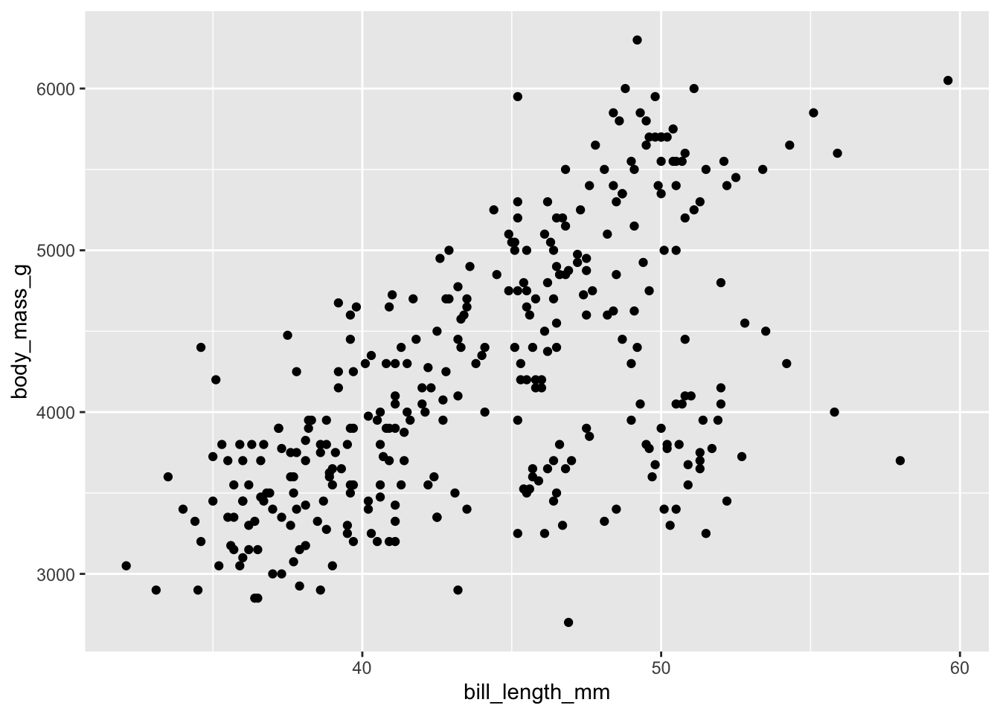
Gardez à l’esprit que pour combiner différentes couches dans ggplot() (c.-à-d. la couche “configuration” à la ligne 1 et la représentation réelle en tant que points à la ligne 2) avec le signe +. Cela restera le même pour tout code ggplot().
4. Définir davantage la géométrie
Maintenant, nous pouvons ajouter des informations supplémentaires au graphique. Par exemple, nous pouvons représenter l’espèce avec des couleurs. Rappelez-vous que tout dans aes() doit correspondre à une colonne dans le cadre de données. Ici, la colonne species fait référence à un facteur. Vous souvenez-vous ce que c’est ? Si non, regardez le TP de la semaine dernière.
Pourquoi est-il utile dans ce cas que species soit un facteur ?
ggplot(
data = penguins,
aes(x = bill_length_mm, y = body_mass_g, colour = species)
) +
geom_point()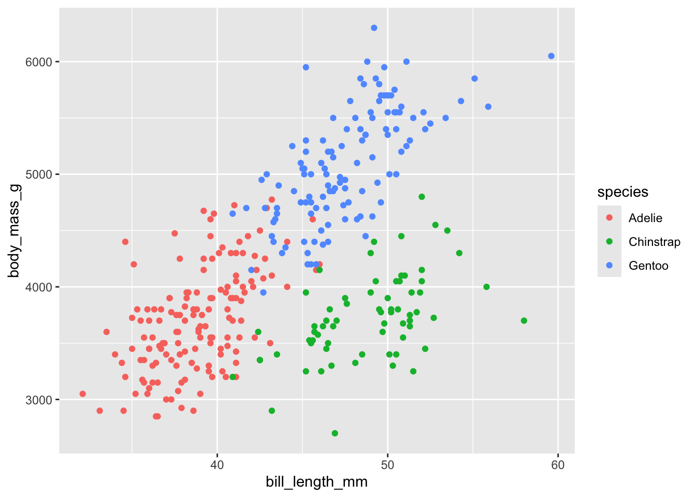
5. Personnaliser le graphique
Maintenant, la base du graphique est configurée. Nous pouvons maintenant adapter son apparence. La première étape importante consiste à configurer des étiquettes appropriées :
ggplot(
data = penguins,
aes(x = bill_length_mm, y = body_mass_g, colour = species)
) +
geom_point() +
labs(x = "Bill length (mm)", y = "Body mass (g)")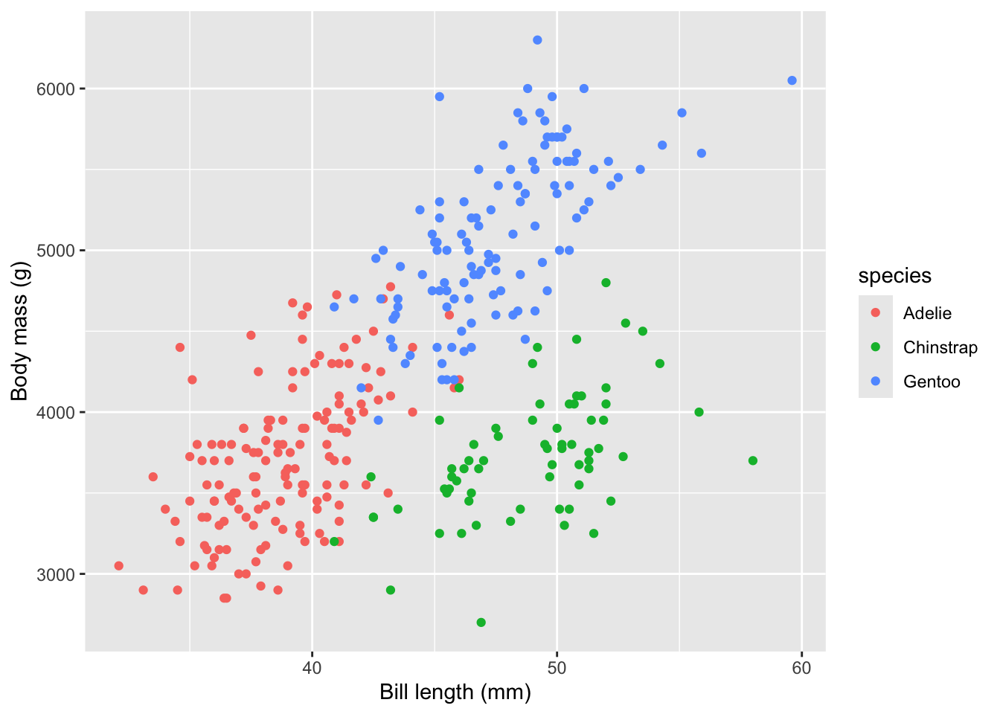
6. Personnaliser le graphique
Nous pouvons également adapter le style global. Cela se fait avec des “thèmes” :
ggplot(
data = penguins,
aes(x = bill_length_mm, y = body_mass_g, colour = species)
) +
geom_point() +
labs(x = "Bill length (mm)", y = "Body mass (g)") +
theme_minimal()
Tâche 1
Utilisez différents thèmes pour le graphique que nous venons de créer ci-dessus. Voici une liste de thèmes standard, mais il existe de nombreux packages R qui élargissent vos choix :
theme_bw(): une variation detheme_grey()qui utilise un fond blanc et des lignes de grille grise fine.theme_linedraw(): un thème avec uniquement des lignes noires de différentes largeurs sur des fonds blancs, rappelant un dessin au trait.theme_light(): similaire àtheme_linedraw()mais avec des lignes et des axes gris clair, pour diriger plus d’attention vers les données.theme_dark(): le cousin sombre detheme_light(), avec des tailles de ligne similaires mais un fond sombre. Utile pour faire ressortir les lignes colorées fines.theme_minimal(): un thème minimaliste sans annotations de fond.theme_classic(): un thème d’apparence classique, avec des lignes d’axe x et y et pas de lignes de grille.
ggplot(
data = penguins,
aes(x = bill_length_mm, y = body_mass_g, colour = species)
) +
geom_point() +
labs(x = "Bill length (mm)", y = "Body mass (g)") +
theme_minimal()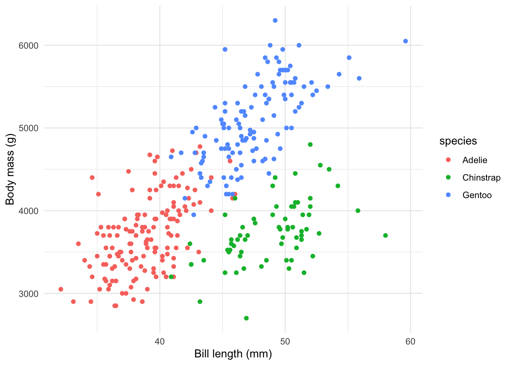
Tâche 2
Pour personnaliser davantage votre graphique, vous pouvez utiliser des couleurs personnalisées. Vous pouvez utiliser des couleurs prédéfinies, comme scale_colour_colourblind() ou scale_colour_viridis_d(). Vous pouvez également utiliser directement une liste de couleurs que vous avez choisies avec scale_colour_manual(values = c("red", "green","blue")). Voici les choix possibles pour ces couleurs manuelles :
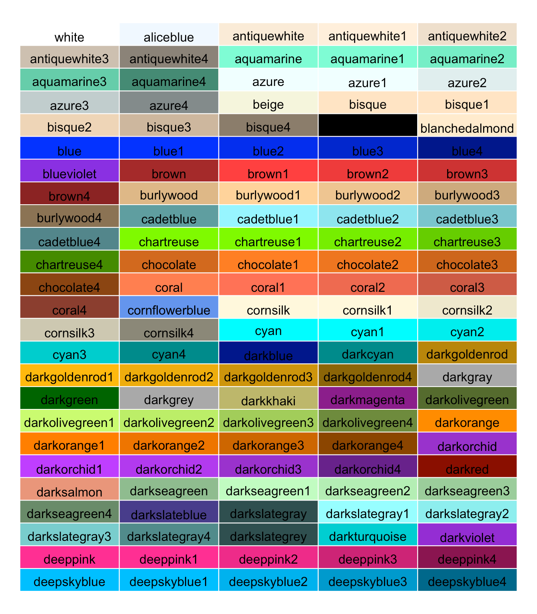
Remplacez les ____ ci-dessous par une échelle de couleur de votre choix.
ggplot(
data = penguins,
aes(x = bill_length_mm, y = body_mass_g, colour = species)
) +
geom_point() +
labs(x = "Bill length (mm)", y = "Body mass (g)") +
scale_colour_viridis_d() +
theme_minimal()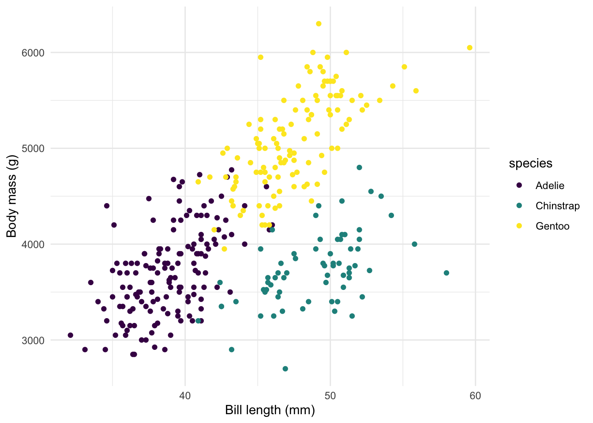
Tâche 3
Prenez le graphique que nous avons créé ci-dessus. En plus des différentes couleurs, utilisez également différentes formes de points pour les différentes espèces. Remplacez le ____ par le nom de colonne approprié :
ggplot(
data = penguins,
aes(x = bill_length_mm, y = body_mass_g, colour = species, shape = species)
) +
geom_point() +
labs(x = "Bill length (mm)", y = "Body mass (g)") +
theme_classic()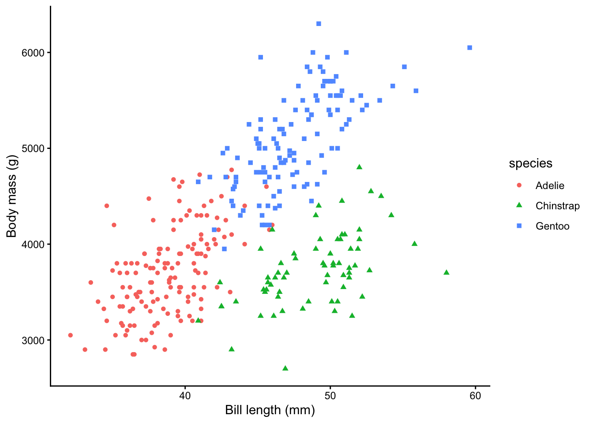
Tâche 4
Jusqu’à présent, nous avons utilisé des données catégoriques pour les différentes couleurs. Que se passe-t-il si vous utilisez une variable numérique pour définir les différentes couleurs ? Remplacez le ____ ci-dessous par une colonne numérique, par ex. flipper_length_mm. N’oubliez pas de mettre à jour également les étiquettes utilisées pour la couleur. Changez le ____ dans labs() pour quelque chose d’utile. N’oubliez pas que tout texte doit être enveloppé avec "".
ggplot(
data = penguins,
aes(
x = bill_length_mm,
y = body_mass_g,
colour = flipper_length_mm,
shape = species
)
) +
geom_point() +
labs(
x = "Bill length (mm)",
y = "Body mass (g)",
colour = "Flipper length (mm)"
) +
scale_colour_viridis_c() +
theme_classic()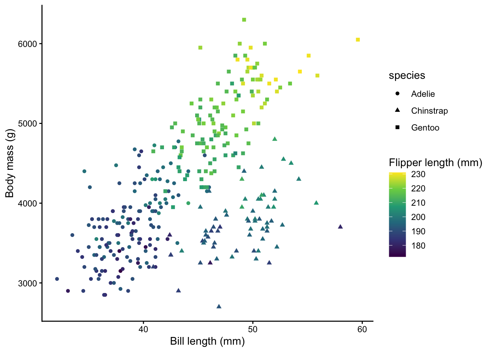
Notez que j’utilise scale_colour_viridis_c() comme une échelle de couleur continue personnalisée car elle montre les différences mieux que l’échelle de couleur standard.
Tâche 5
Regardez le graphique que vous venez de créer. Quel est la relation entre la longueur du bec, la masse corporelle et la longueur des nageoires ?
Les trois variables sont positivement corrélées.
Tâche 6
Jusqu’à présent, nous avons principalement tracé deux variables numériques (bill_length_mm et body_mass_g) et étendu cela avec une troisième variable (catégorique : species, numérique : flipper_length_mm). Reconsidérez les différents types de graphiques que j’ai vous montrés dans la conférence. Commençons par tracer une seule variable numérique sous forme d’histogramme :
ggplot(data = penguins, aes(x = bill_length_mm)) +
geom_histogram() +
theme_classic()`stat_bin()` using `bins = 30`. Pick better value `binwidth`.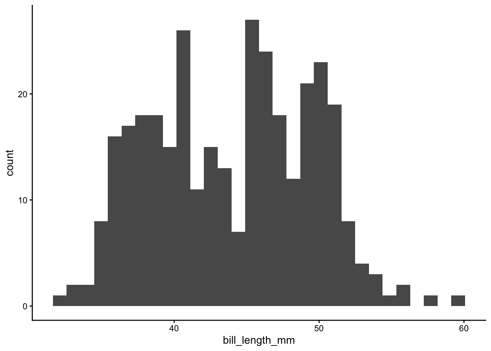
Notez que seule une variable x doit être donnée dans aes(). L’axe y représente la fréquence de chaque valeur et est directement calculé par ggplot().
Vous pouvez modifier la largeur des barres. Cela peut être utile, car chaque barre représente la fréquence d’une plage de valeurs (par exemple, des étapes de 5 mm). Vous pouvez le faire avec l’argument bins. Essayez différentes valeurs (integers = nombres entiers) ci-dessous et voyez ce qui se passe :
ggplot(data = penguins, aes(x = bill_length_mm)) +
geom_histogram(bins = 20) +
theme_classic()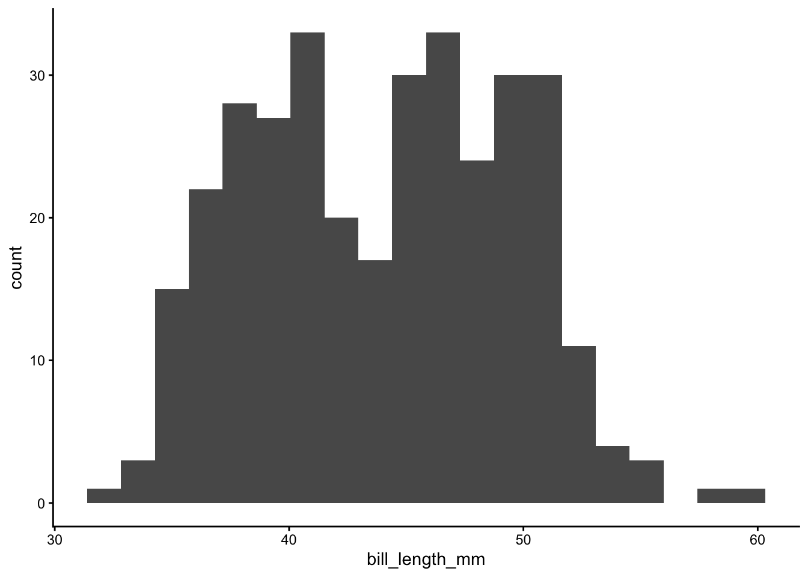
ggplot(data = penguins, aes(x = bill_length_mm)) +
geom_histogram(bins = 200) +
theme_classic()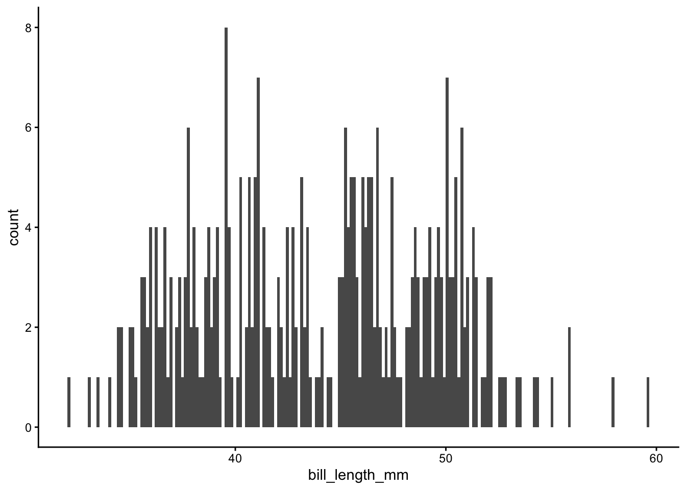
ggplot(data = penguins, aes(x = bill_length_mm)) +
geom_histogram(bins = 2) +
theme_classic()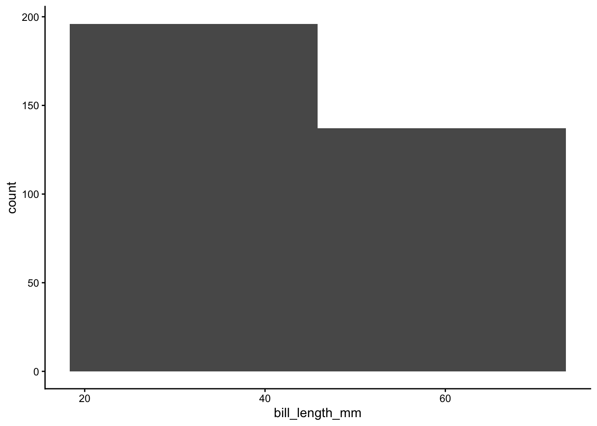
Tâche 7
Les graphiques en barres sont couramment utilisés pour visualiser la fréquence des variables catégoriques. Encore une fois, ggplot() peut calculer l’occurrence de chaque niveau de facteur (par exemple, espèce) avec stat = "count".
penguins %>%
ggplot(aes(x = species)) +
geom_bar(stat = "count") +
theme_classic()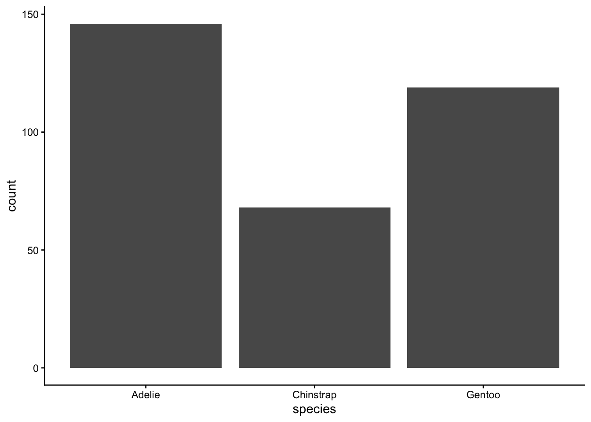
Maintenant, tracez de la même manière l’île où les manchots ont été observés. Utilisez la colonne island.
ggplot(data = penguins, aes(x = island)) +
geom_bar(stat = "count") +
theme_classic()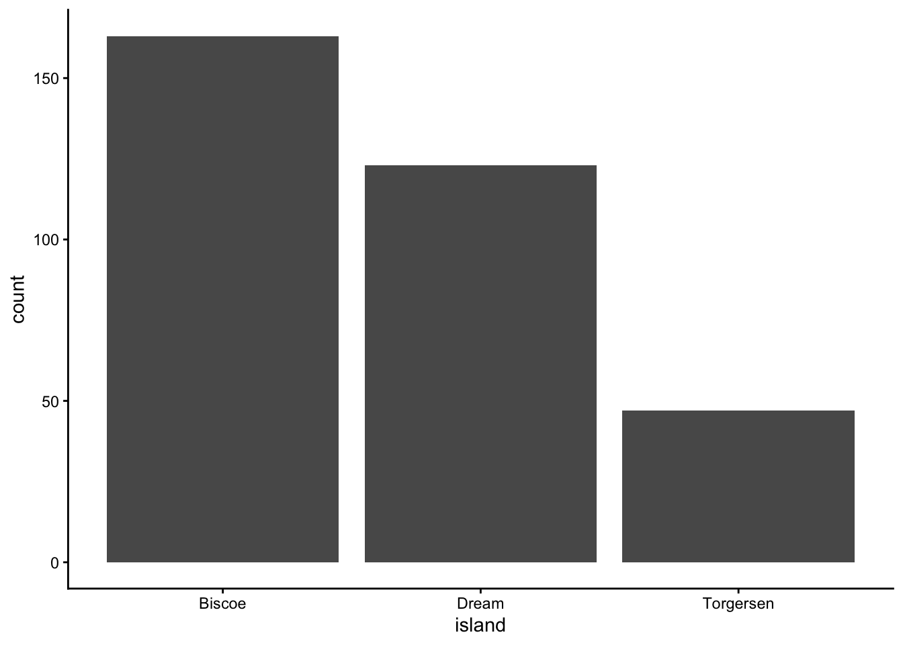
Tâche 8
Si vous voulez tracer une variable numérique et une variable catégorique, il est souvent utile de montrer pour chaque groupe (c.-à-d. le niveau de la variable catégorique) la moyenne et l’écart-type de la variable numérique. L’écart-type vous renseigne sur la variabilité d’un groupe de valeurs - vous en apprendrez plus à ce sujet la semaine prochaine. Les fonctions de résumé ggplot() peuvent être très pratiques :
ggplot(data = penguins, aes(x = island, y = flipper_length_mm)) +
geom_pointrange(stat = "summary", fun.data = mean_sdl) +
theme_classic()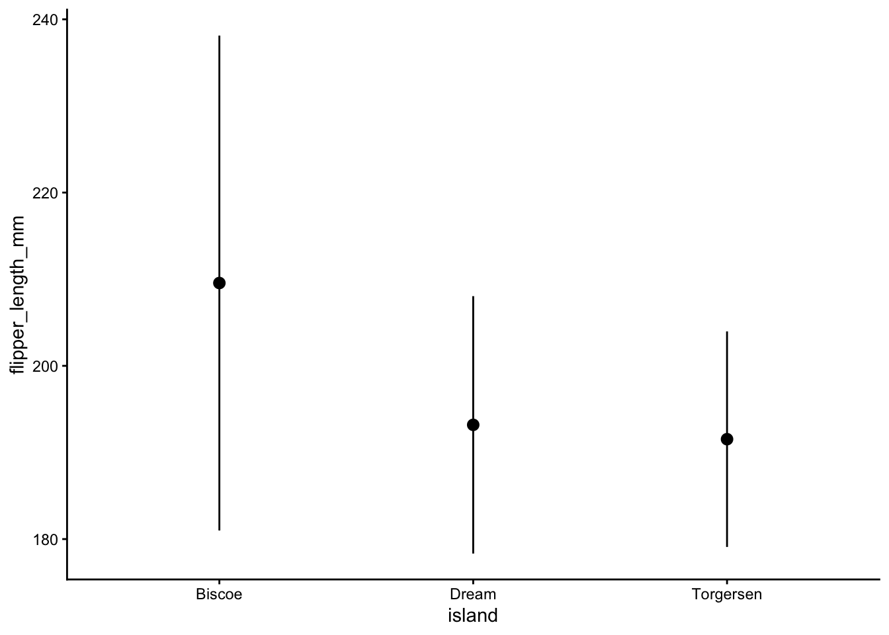
Dans ce graphique, le point représente la moyenne et la ligne l’écart-type. Faire cela pour les données groupées par île n’est pas très utile. Adaptez le graphique ci-dessous pour qu’il affiche la longueur des nageoires groupée par espèce :
ggplot(data = penguins, aes(x = species, y = flipper_length_mm)) +
geom_pointrange(stat = "summary", fun.data = mean_sdl) +
theme_classic()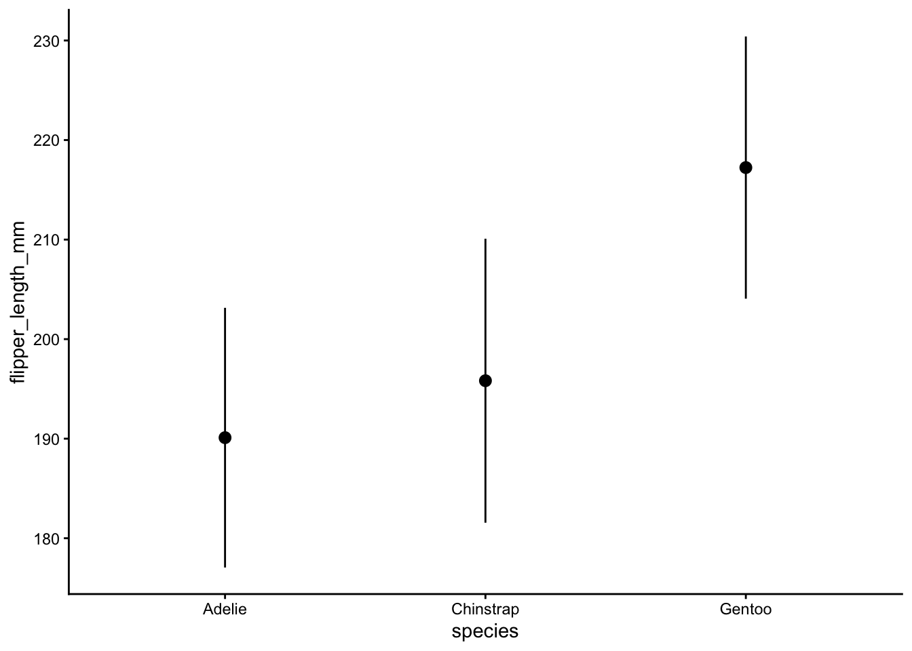
Tâche 9
Cependant, ces chiffres peuvent cacher à quoi ressemblent réellement les données. Je recommande habituellement de tracer une sorte de résumé (comme la moyenne et l’écart-type) et les données brutes elles-mêmes. Vous avez vu dans la conférence que ggplot() nous permet de combiner différents graphiques. Ci-dessous, je trace chaque donnée brute en arrière-plan, puis le résumé sur le dessus. J’utilise geom_jitter() ici, ce qui aide à afficher des valeurs très similaires qui se chevauchaient autrement. geom_jitter() ajoute du bruit aléatoire le long de l’axe des x et permet ainsi de voir tous les points de données.
Notez que j’ai utilisé alpha, qui indique la transparence d’affichage d’un point de données. 0 est complètement transparent, 1 n’est pas du tout transparent. La semi-transparence aide ici à visualiser des données similaires.
Que se passe-t-il si vous n’utilisez pas geom_jitter() mais le geom_point() “standard” ? Essayez ci-dessous :
ggplot(data = penguins, aes(x = species, y = flipper_length_mm)) +
geom_point(alpha = .4) +
geom_pointrange(stat = "summary", fun.data = mean_sdl) +
theme_classic()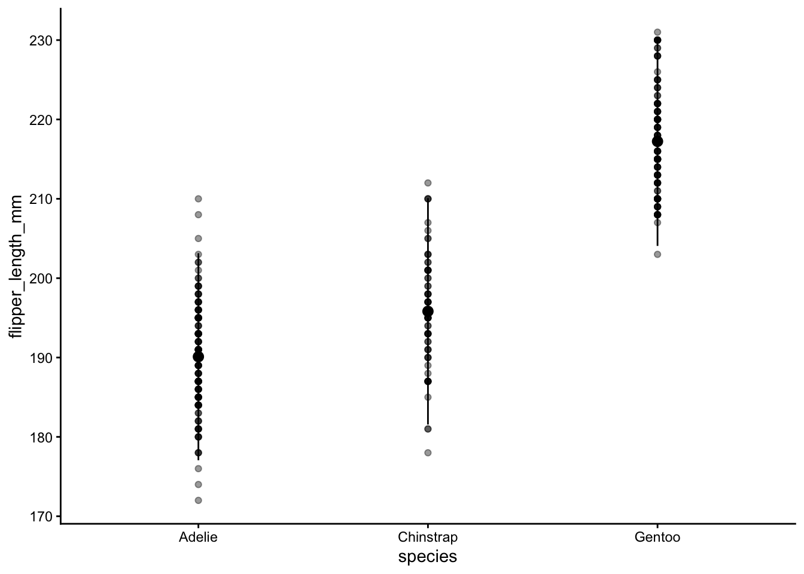
ggplot(data = penguins, aes(x = species, y = flipper_length_mm)) +
geom_jitter(alpha = .4) +
geom_pointrange(stat = "summary", fun.data = mean_sdl) +
theme_classic()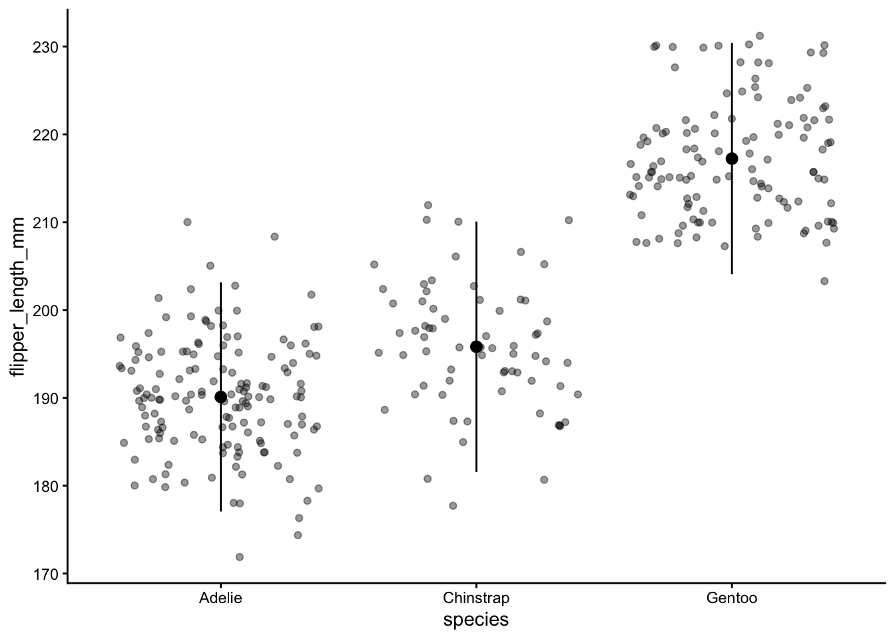
Tâche 10
En dernière étape, essayez de personnaliser le graphique pour que vous réalisiez quelque chose de similaire à celui-ci. Pensez à quelle colonne est utilisée pour quoi.
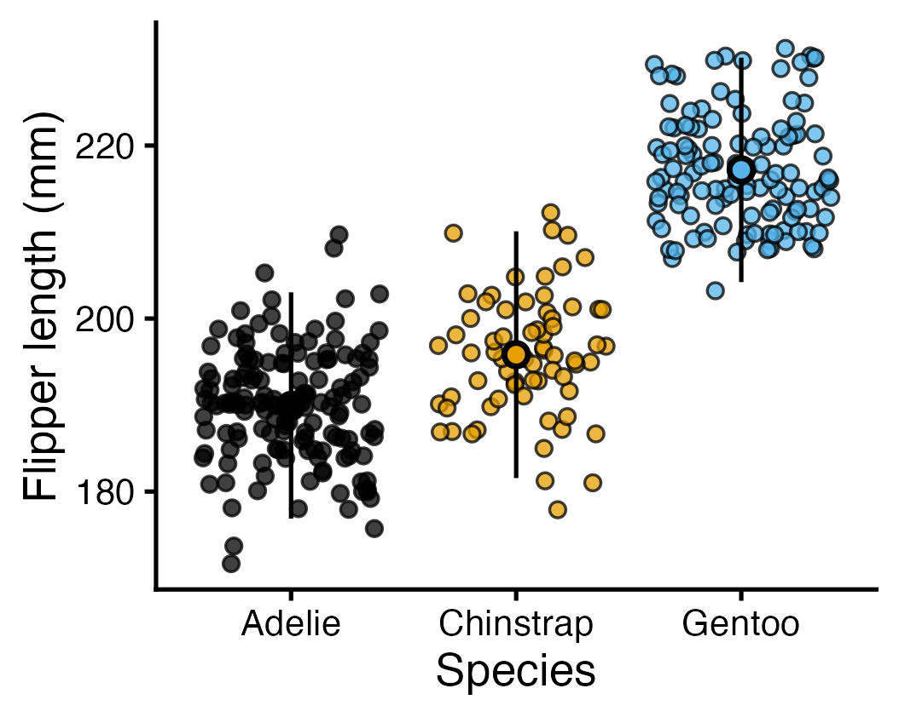
Voici le graphique “base” comme point de départ :
ggplot(
data = penguins,
aes(x = species, y = flipper_length_mm, fill = species),
) +
geom_jitter(alpha = .75, shape = 21) +
geom_pointrange(
stat = "summary",
fun.data = mean_sdl,
show.legend = F,
shape = 21
) +
labs(
x = "Species",
y = "Flipper length (mm)"
) +
scale_color_colorblind() +
scale_fill_colorblind() +
theme_classic(base_size = 20) +
theme(legend.position = "none")Warning: `scale_fill_colorblind()` was deprecated in ggthemes 5.2.0.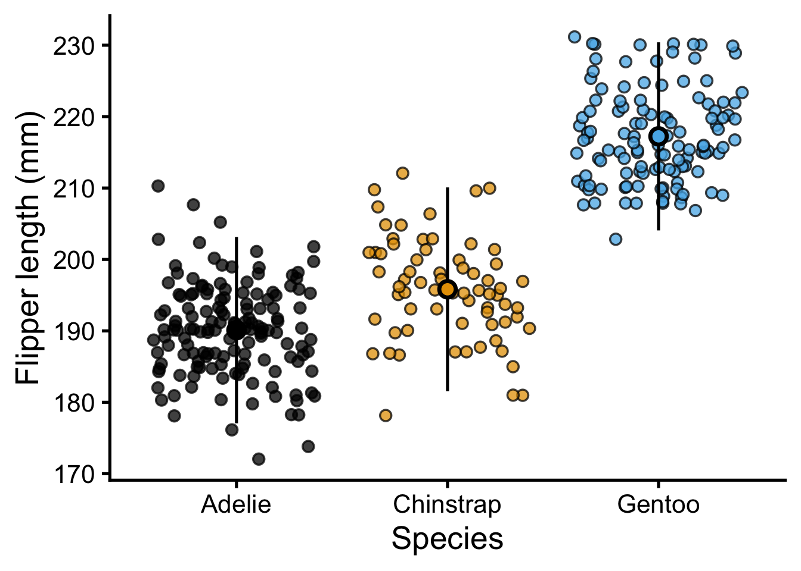